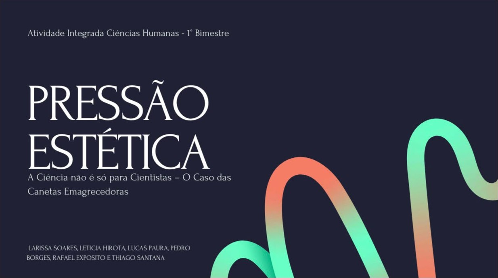

O que estudei
- Ética e tomada de decisão
- Ética no filme "Relatos Selvagens"
- Pressão estética e o caso das canetas emagrecedoras
A ética discute como a gente deve agir. Aristóteles falava em equilíbrio, Kant em regras que valessem para todos, e os utilitaristas olhavam para as consequências. O mesmo problema pode ter respostas diferentes.
"Relatos Selvagens" (Argentina, 2014) tem seis histórias de pessoas que perdem o controle. Em quase todas dá para discutir onde acaba a justiça e começa a vingança.
Pressão estética é a cobrança para ter um corpo dentro de um padrão. Um exemplo atual é o uso de canetas emagrecedoras só por aparência.
Atividades e trabalhos
- Atividade Integrada de Ciências Humanas (1º bimestre): Pressão Estética
- Ética em "Relatos Selvagens"
- Retomada CHSA: Telas em Conflito
O nome completo do trabalho em grupo é "Pressão Estética: A Ciência não é só para Cientistas – O Caso das Canetas Emagrecedoras".
Nas outras duas atividades, a discussão sobre escolhas e conflitos partiu de filmes.
Evidências da aprendizagem
Capa da atividade integrada do 1º bimestre.

Minha reflexão
As canetas emagrecedoras são um tema que aparece muito nas redes sociais. Uma escolha que parece só da pessoa também sofre pressão de fora.